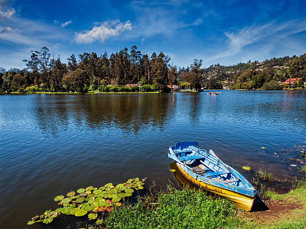
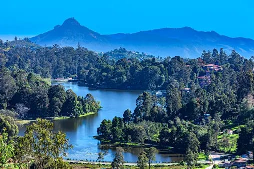
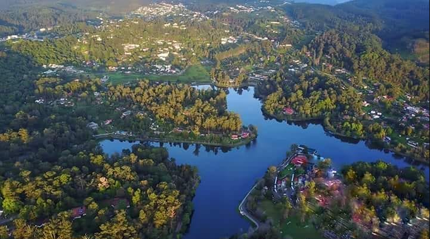

Hills and valleys filled with the enigmatic hug of mist, lush mountain ranges that offer a warm welcome to
visitors, enjoyment and experiences that proffer beautiful memories for a lifetime – Kodaikanal is a wonder
in ways much more than one.
If you’ve ever dreamt of being pampered by the lulling lullabies of Nature, and being embraced affectionately
by the cool breeze that flows in from picturesque hill slopes, then Kodaikanal is indeed the place to be in to make
those dreams come true. The scenic beauty of Kodaikanal never ceases to amaze travellers.
Referred to as the “Princess of Hills”, Kodaikanal is one of the most sought-after hill station destinations in
Tamil Nadu and the whole of India. Located at about 7000 ft above the sea-level, Kodaikanal was established
as a destination by British bureaucrats and Christian missionaries in the year of 1845. However, the earliest
references to the stunning hill station can be found as early as the Sangam literature time. However the modern
era of Kodaikanal began only after the British came in. It served as a summer retreat and a vacation spot for the
colonial power. Ever since those days, Kodaikanal has been a popular choice among hill station lovers for a quick
escape up the mountains.



The verdant hills, the cascading waterfalls, picturesque lakes, pristine countrysides – the reason why Kodaikanal
has been popular among tourists are many. For a discerning traveller, the locale offers much to see, enjoy and
experience. Plenty of activities await a visitor here. Boating, cycling, horse riding and trekking are some of the
most common among them. One of the other spectacles of this region is the Kurinji flower that blooms only once
in 12 years, making itself a unique spectacle to watch.
Visited Places
Berijam Lakes
Situated in a forest conservation area, Berijam Lake is a haven for all Nature enthusiasts and wildlife lovers. If a quiet
morning or evening by the lakeside surrounded by lush green woods is what you imagine as a place to unwind, then
Berijam Lake is the perfect spot for you.
Berijam Lake is located 22 km southwest from the famous Kodaikanal Lake. It is a natural freshwater lake which you can
drive down to through beautiful forest cover. A forest pass is required to reach Berijam Lake. It can be easily obtained
from the District Forest Office. The quiet forest, with stunning lake views, and surrounded by acacia and pine trees, is
everything you need to spend a tranquil holiday in.
Berijam Lake is situated in the Upper Palani hills in the old site of Fort Hamilton. Carry your binoculars with you as the
Upper Palani shola reserve forest is home to the crested serpent eagles, pariah kites, pale-rumped swallows and the
edible-nest swiftlets. Migratory birds like common rosefinch, blue chat, leaf-warblers and blyth’s reed warblers also
visit this forest.
Pine Trees
Pine Forests are cloaked in a rustic charm, and walking under the canopy of these old pine trees will offer much-needed
solitude for those seeking it.
Picture this. An seemingly unending copse of tall, majestic pine trees, hemming you in and nuzzling you in its wild clasp,
as birds chirp away in gay abandon. At the Pine Forests, one of the must-visit locales in Kodaikanal, hundreds of pine
trees dot the landscape, making it an ideal spot for travellers to wander about. These forests are cloaked in a rustic charm,
and walking under the canopy of these old pine trees will offer much-needed solitude for those seeking it.
Located in the south-western part of Kodaikanal, these plantations were put up a century ago. They make for an idyllic spot
to listen to the whispers of Nature. A British Officer Mr H. D. Bryant has been credited with initiating the move in 1906 to
grow timber.